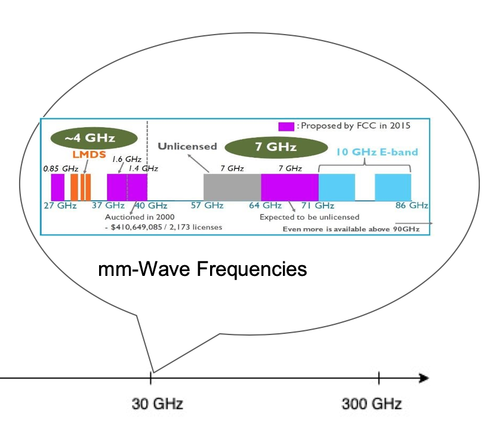

Project: Defining Next-Generation High-Speed Wireless
|

|
This project aims to devise next-generation wireless networks that achieve faster throughput and low latency. We both aim to study and re-design existing cellular infrastructure and develop new clean slate solutions. We developed solutions that learned critical problems in existing AT&T and Verizon wireless networks. We also developed a best paper award-winning solution to more effectively predict performance at cellphones purely from the cellular towers, without draining the phones' battery. We also explore new networking technologies for high-speed wireless beyond 5-G: a robust and reliable mm-wave solution. |
Publications
- Osprey: A mmWave Approach to Tire Wear Sensing, Akarsh Prabhakara, Vaibhav Singh, Swarun Kumar and Anthony Rowe, MobiSys 2020 [WEBSITE]
- Quick (and Dirty) Aggregate Queries on Low-Power WANs, Akshay Gadre, Fan Yi, Anthony Rowe, Bob Iannucci and Swarun Kumar, IPSN 2020 (Best Paper Award) [PAPER] [WEBSITE]
- Millimeter-Wave Full Duplex Radios, Vaibhav Singh, Susnata Mondal, Akshay Gadre, Milind Srivastava, Jeyanandh Paramesh and Swarun Kumar, MobiCom 2020 [PAPER] [WEBSITE]
- Perspective: eliminating channel feedback in next generation cellular networks , Deepak Vasisht, Swarun Kumar, Hariharan Rahul and Dina Katabi, ACM SIGCOMM CCR 2019
- Eliminating Channel Feedback in Next-Generation Cellular Networks , Deepak Vasisht, Swarun Kumar, Hariharan Rahul and Dina Katabi, SIGCOMM 2016 (Best Paper Award, GetMobile Research Highlight)
- piStream: Physical Layer Informed Adaptive Video Streaming Over LTE, Xiufeng Xie, Xinyu Zhang, Swarun Kumar, and Li Erran Li, MobiCom 2015 (ACM GetMobile Research Hightlight)
- LTE Radio Analytics Made Easy and Accessible, Ezzeldin Hamed, Dina Katabi, and Li Erran Li, ACM SIGCOMM 2014 [PAPER] [WEBSITE]
Project Participants
- PI: Swarun Kumar
- Students: Vaibhav Singh, Akshay Gadre and Akarsh Prabhakara
- Collaborators: Prof. Rick Carley, Prof. Anthong Rowe and Prof. Jeyanandh Paramesh